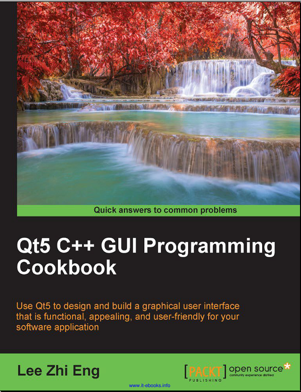

关于Qt的安装及配置OpenCV网上也有很多，此处也仅仅转载部分，详细可以自己搜索。
我是在windows上安装的Qt,编译器用的MSVC2015 64bit,界面可以使用Qt Creator或者VS2015编写，编译器也可以选择GCC(Windows上安装MingW即可)。
还是老规矩，学习一个软件，至少也得看看相关书籍，下面列举一下部分，一定不是最好的(要不然我早就成Qt高手了)，PS：基本下面的书我都没看，当时也就上B站看了几个视频就开始安装及使用了，有问题了再去搜索解决方法，初期效率可能高点，后期会浪费很多时间在这种基础知识上，这种方法仅是为了应急，当然现在不急了也没有去看:-(
1. Qt5 C++ GUI Programming Cookbook

2. Qt5开发及实例(第3版)
3. Qt及QtQuick开发实战精解
下面是界面编写工具区别：
Qt Creator 与 VS+Qt 一些值得注意的小差别
最近，项目方面需要将一个原本用VS+Qt开发的界面移植到Qt Creator上面。在这个过程中遇到了一些bug然后不断debug，打算把它们分点写下来，希望对有同样需求的朋友能有一些帮助。 目前Qt的开发环境一般有两种，一种是直接使用Qt Creator（下称为“前者”），而另外一种是使用VS+Qt（下称为“后者”）进行开发。在我们的项目中，考虑到前者可以跨平台，比较方便开发，所以我们才有了移植代码的打算。
VS写Qt和Qt Creator的区别
接触过Qt的同学肯定用过QtCreator,本id最近常用，也就写个教程记录一下安装的过程。可能比较少人学过Qt，感觉Qt还是挺不错的，做出来的界面还算好看，关键是跨平台。 说明：安装的系统：win10专业版 QtCreator版本：qt-opensource-windows-x86-5.12.6 1、下载QtCreator,可以在官网（http://download.qt.io/archive/qt/）下载，为避免网站更新，各位找不到，我也放网盘了，有点大，大家尽量到官网下载，那样快些。 2、选5.12； 3、选5.12.6； 4、选qt-opensource-windows-x86-5.12.6.exe 下载。 5、装了迅雷的，可以用它下载，这样快些。 6、下完后，右键，以管理员身份运行。（注意：如果装有360等杀毒软件的，装的时候可能误报，允许就好，不然，装了用不了） 7、点”next”； 8、点“Skip”； 9、点“下一步”； 10、建议修改安装的位置，这个位置要记住，后面配置环境变量要用到。 11、看图，空间大的，可以全选，也就20多G，如果想学习的，建议把源码装上，不过，选了源码，装起来要很长一段时间。 12、同意协议； 13、点“下一步”； 14、点“安装”。 15、等，要挺长时间的。（再次强调，有360等杀毒软件会误报，允许就好，不然装了，有些功能用不了，到时又重装挺麻烦的）。 16、装完后，运行后的界面。 17、到这里，已经可以用了，但是如果把QtCreator编出的exe文件单独运行时，会有如下的报错，找不到好几个dll。为了解决这个问题，需要配置一下环境变量。 18、右键桌面的“此电脑”，选“属性”，在弹出的界面的左侧，选高级系统设置。 19、点“环境变量”； 20、在“系统变量”中选中“Path”，然后点编辑按钮。 21、点“新建”，把Qt的bin，和编译链中的bin都添加到这里就好，最后点“确定”。 22、这就完成了。
QT Creator使用vs 2019编译工具无法调试的问题
设置调试器 此时已经配置好vs+qt的环境,可以用vs开发进行QT程序开发，和调试 若要用QT Creator进行调试，则还需要设置QT Creator的调试器 见以下链接（感谢原博主） https://blog.csdn.net/chenyijun/article/details/103031696 附：QT程序的打包发布方法 1）通过自己复制相关DLL的方式 2）使用自带的打包工具 windeployqt.exe 通过QT命令行调用的方式 https://blog.csdn.net/lxj434368832/article/details/80814388 3）使用第三方打包工具（还待学习) ========================================================================================= Qt 5.13.1安装可查找网上资料 visual studio 2019 只安装了编译工具没有安装IDE，然后打开qt creator 创建工程，配置编译环境，但是发现没有调试器。说明Windbg没有安装，而这个调试器是与SDK一起的，这个时候不需要再单独安装Windbg，只需要到控制面板找到安装的SDK，再修改安装一下就可以了 勾选 Debugging Tools for windows ，然后点击 change 。然后就会自动安装debug工具。安装完成后再启动qt creator，debug工具就自动识别了。
一、Qt和Qt Creator的区别 Qt是C++的一个库，或者说是开发框架，里面集成了一些库函数，提高开发效率。 Qt Creator 是一个 IDE，就是一个平台，一个开发环境， 类似的比如说VS，也可以进行Qt开发， 当然VS中的Qt是作为一个插件插入VS平台的。 二、下载 qtcreator是Qt开发的IDE，只安装这个是不行的，因为还没有相关的Qt库呢，也就是说他只是一个空壳，一般都用不上。 qt的版本主要分为windows、linux、mac的版本，分别在不同的平台张运行。 在qt5.9以前，windows版本又细分了一些版本，包括MinGW和MSVC。其中 MSVC 用的 VS 编译器，还需要安装一些Visual C++的库什么的，总之， 如果你的电脑中没有安装VS那就不要安装这个版本了，否则使用时编译通不过。 而我们要用的就是MinGW版本，注意这个编译器是只有32位的，所以在找64位的同学就不要再找了。还有一些是用于安卓开发的，我也不懂，但也用不上啊，至于什么编译器GCC，G++之类的，也不太懂，MinGW好像是基于G++的。 然后说一下qt5.9以后的版本，其实就是集成了。把以前版本中的一些细分都集成到一个安装包中，可以看到安装包从以前的1.2G变为了2.3G。而具体的细分就放到了安装时自选了，比如之前的MinGW和MSVC等不同版本就可以在安装时选择，而windows版本就都集成到 qt-opensource-windows-x86-5.9.0 中。 四、关于 Qt 5.15 后，不再提供独立安装包的问题 如果选择了最新版本的QT，可能没有提供要下载的类似的的文件 qt-opensource-windows-x86-5.14.2.exe。如2020.8.16时，镜像中已经发布有5.15的目录，但是里面并没有这个.exe的安装文件。原因在于从 Qt 5.15 开始，开源版本，无论是不是 LTS， 不再提供编译后的独立安装包， 只能在线安装。
windows7搭建Qt和opencv环境（借助VS2015编译器）
记录Qt配置opencv环境遇到的问题，折腾了好几天弄这个环境，不得不说QT自带的creator真是让人醉了，只提示程序crashed，没有任何原因。所以记录一下，防止以后再被坑。 Qt和opencv Qt和opencv网上教程也是一堆。我天真的以为，这也很顺风顺水…. 我首先下载了opencv2.4.13（windows版本），然后解压，然后开始疯狂添加路径。 题外话：opencv的windows版本解压就可以得到已经编译了的文件（build文件夹） 因为Qt程序一直crashed，而且我肯定是opencv出问题了，所以我决定在VS2015中测试opencv。大家都知道，2.4.13中有vc11和vc12两个文件夹。在VS2015中，使用vc12。配置了属性表之后，完美通过。 我仔细思考了一下，觉得还是编译器的问题。stackoverflow中首先肯定了，这种情况的crashed是dll文件没找到，而我在Qt中添加的opencv库路径是解压得到vc12。问题的关键在于： Qt自动检测的编译器是VS2015的编译器，而Qt要求dll文件和代码文件必须使用同一个编译器。我天真的以为VS2015中能使用vc12的编译结果，Qt中也可以，事实证明是不行的！！！ 解决办法： 使用VS2015的编译器MSVC2015手动编译一下opencv的源码，然后在Qt中引用这个编译得到的库文件。 Qt版本问题 这个版本主要是指编译器，在windows中，Qt可以使用两种版本的编译器，Mingw和MSVC，至于我为什么不用前者，因为我下载不了。 根据我浏览的解答来看，无论是使用哪个版本，除非和opencv中的自带的编译一样（比如VS2012），都需要手动编译opencv然后再使用库文件。至于网上一堆只添加路径就跑起来的教程，我只想说，NB！
Windows7在Qt5.9.1构建OpenCV（vs2015+opencv3.3.0+CMake3.9.1+Qt5.9.1
此次构建过程参考于《OpenCV 3和Qt5计算机视觉应用开发_（伊朗）阿敏·艾哈迈迪·泰兹坎迪》,是对第一章的学习笔记。 构建使用工具 vs2015 opencv3.3.0（下载地址：https://opencv.org/releases/） Qt5.9.1（下载地址：https://download.qt.io/official_releases/） 注：Windows版本后缀为：.exe CMake3.9.1（下载地址：https://cmake.org/download/） 软件安装过程注意事项 安装过程就不用介绍了，下面列出安装注意事项 vs2015：编程语言需要勾选上C++ Qt5.9.1：编译器需要勾选上 MSVC2015 32位 构建前准备 1.需要在创建个文件夹，用来存放OpenCV源码与构建之后文件（我创建的是build）。 2.将下载下来的OpenCV源码放入创建的文件夹中。 可以直接使用我构建好，并测试成功的工程与所有.dll、.lib、.h：https://download.csdn.net/download/qq_42401265/12028536